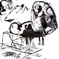
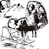

|  | |||||
| Pollock's EPICURUS | Pollock's Portraits | New Testament | Parables of Christ | Miracles of Christ | ... and The Wife |
Ian Pollock 171 Bond Street Macclesfield Cheshire SK11 6RE
T 01625 426205 M 07770 927940 E ian.pollock21@ntlworld.com video: A Case of Happy Accidents Images copyright Ian Pollock
|  | |||||
| Pollock's EPICURUS | Pollock's Portraits | New Testament | Parables of Christ | Miracles of Christ | ... and The Wife |